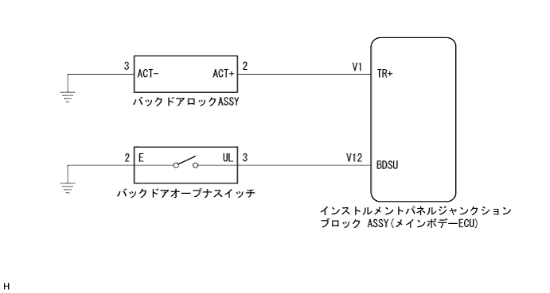
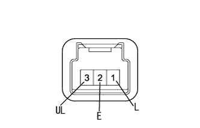
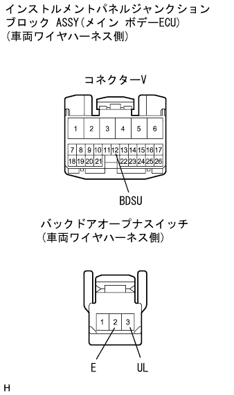
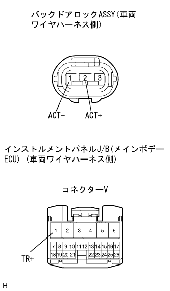

Power Door Lock System Back Door cannot be Opened |

| Step 1 | Perform TaSCAN Active Test |
Using SST (TaSCAN), check that the back door can be opened by the Active Test.
| Item Name | Drive |
|---|---|
| Trunk Open (Back Door Open) | Open |
|
| ||||
| OK | |
| Step 2 | Read TaSCAN Data |
ECU Data Monitor
Using SST (TaSCAN), perform data monitor of the main body ECU.
| Item Name [Symbol] | Item Description/Display Range | Standard Value | Remarks |
|---|---|---|---|
| Back Door Handle SW [BHSW] | Back door opener switch status Display range: OFF/ON | OFF: Back door opener switch free ON: Back door opener switch pushed | - |
|
| ||||
| OK | ||
| ||
| Step 3 | Inspect Back Door Opener Switch Assembly |
 |
Using SST (Toyota electrical tester), measure the resistance.
| Tester Connection | Condition | Standard |
|---|---|---|
| 3(UL) - 2(E) 1(L) - 2(E) | Switch not operated | 10 kΩ or higher |
| 3(UL) - 2(E) | When opener switch is pressed | Below 1 Ω |
| 1(L) - 2(E) | When lock switch is pressed | Below 1 Ω |
|
| ||||
| OK | |
| Step 4 | Inspect Wire Harness and Connector (Main Body ECU (Instrument Panel Junction Block Assembly) - Back Door Opener Switch) |
 |
Disconnect connector V of the instrument panel junction block assembly (main body ECU) and the back door opener switch connector.
Using SST (Toyota electrical tester), measure the resistance. (For Terminals of ECU, see)
| Inspection terminals (Main body ECU - Switch) | Condition | Standard |
|---|---|---|
| V12(BDSU) - 3(UL) | Always | Below 1 Ω |
| Inspection terminals (Switch - Body ground) | Condition | Standard |
|---|---|---|
| 3 (UL) - Body ground | Always | 10 kΩ or higher |
| 2 (E) - Body ground | Always | Below 1 Ω |
|
| ||||
| OK | ||
| ||
| Step 5 | Inspect Back Door Lock Assembly |
 |
Push the latch of the back door lock assembly with a flat-tipped screwdriver or equivalent to put it in the locked (full latch) state.
Inspect the door lock operation when battery voltage is applied to each terminal of the connector.
| Battery connection | Door Lock Operation |
|---|---|
| Battery positive → 2 (ACT+) Battery negative → 1 (ACT-) | Locked (full latch) → Unlatched |
|
| ||||
| OK | |
| Step 6 | Inspect Wire Harness and Connector (Back Door Lock Assembly - Main Body ECU (Instrument Panel Junction Block Assembly)) |
 |
Disconnect the back door lock assembly connector and connector V of the instrument panel junction block assembly (main body ECU).
Using SST (Toyota electrical tester), measure the resistance. (For Terminals of ECU, see)
| Inspection Terminals (Door Lock - Main Body ECU) | Condition | Standard |
|---|---|---|
| 2(ACT+) - V1(TR+) | Always | Below 1 Ω |
| Inspection terminals (Door lock - Body ground) | Condition | Standard |
|---|---|---|
| 2 (ACT+) - Body ground | Always | 10 kΩ or higher |
| 1 (ACT-) - Body ground | Always | Below 1 Ω |
|
| ||||
| OK | ||
| ||